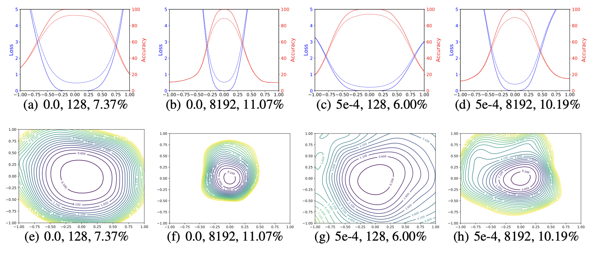

What do neural loss surfaces look like? The seminar given by
Tom Goldstein on February 8, 2018 visualized the structure of neural loss functions,
and discussed the effect of loss landscapes on generalization.
The talk explained “filter normalization” that helps us to visualize loss function curvature
and make meaningful side-by-side comparisons between loss functions. It also compared some extreme behavior observed in certain neural networks.
In this report, we discuss the sharpness/flatness of minimizers found by different methods, as well as the effect of network architecture choices on the loss landscape.
In particular, the filter normalization is presented in mathematical language.
Motivation for this area of study is solid; the results outlined in Goldstein's seminar can help machine learning engineers to gain a better understanding of the neural loss functions.
Sharp-flat dilemma
Small-batch SGD is considered to yield "flat" minimizers with good generalisation, whereas large batches produce "sharp" minima with poor generalization[1, 2, 3]
However, Bengio[4] refutes this notion, claiming that generality is unrelated to the curvature of loss surfaces. Goldstein has some interesting findings on the differences between sharp and flat minimizers.
In his talk, he explained that he trained a CIFAR-10 classifier using a 9-layer VGG network with batch normalization for a fixed number of epochs. He compared the use of different batch sizes: a large batch size of 8192, and a small batch size of 128.
Filter normalization
Neural networks are trained on a corpus of feature vectors (e.g., images) \(x_{i}\)
and accompanying labels \(y_{i}\) by minimizing a loss of the form
\(\mathrm{L}(\Theta) = \dfrac{1}{m}\sum_{i=1}^{m}l(x_{i},y_{i};\Theta)\),
where \(\Theta\) denotes the parameters (weight) of the neural network, the function \(l(x_{i},y_{i};\Theta)\)
measures how well the neural network with parameters \(\Theta\) predicts the label of a data sample, and \(m\) is the number of data samples. Neural nets contain many parameters, and so their loss functions live in a high-dimensional space.
Random Directions
To apply Goldstein's method, select a graph's centre point and two direction vectors, \(\delta\) and \(\eta\). So we have
\begin{equation}
f(\alpha,\beta) = \mathrm{L}(\Theta^{*} + \alpha\delta + \beta \eta),
\end{equation}
in the 2D case.
The method was used to investigate the trajectories of various minimization algorithms in[5].
While the "random directions" technique to visualizing loss landscapes is straightforward, it fails to reflect the inherent geometry of loss surfaces and so cannot be used to
compare the geometry of two distinct minimizers or networks. The scale invariance in network weights is the reason behind this.
To remove this scaling effect, we plot loss functions using filter-wise normalized directions.
we normalize each filter in \(d\) to have the same norm of the corresponding filter in \(\Theta\). In other words, we make the replacement
\begin{equation}
d_{i,j} \leftarrow \dfrac{d_{i,j}}{\|d_{i,j}\|}\|\Theta_{i,j}\|
\end{equation}
where \(d_{i,j}\) represents the \(j\)th filter (not the \(j\)th weight) of the \(i\)-th layer of \(d\), and \(\|\cdot\|\) denotes the Frobenius norm.
Conclusion
Goldstein introduced a visualization tool that reveals the effects of a number of neural network practitioner decisions, including network architecture, optimizer selection, and batch size.
Anecdotal evidence and theoretical discoveries with sophisticated assumptions have propelled neural networks forward substantially in recent years. A better knowledge of the structure of neural networks is required to make further advances.
P. Chaudhari, A. Choromanska, S. Soatto, Y. LeCun, C. Baldassi, C. Borgs, J. Chayes, L. Sagun, and R. Zecchina, “Entropy-SGD: biasing gradient descent into wide valleys,” Journal of Statistical Mechanics: Theory and Experiment, vol. 2019, no. 12, p. 124018, dec 2019. [Online]. Available:
https://doi.org/10.1088/1742-5468/ab39d9
N. S. Keskar, D. Mudigere, J. Nocedal, M. Smelyanskiy, and P. T. P. Tang, “On large-batch training for deep learning: Generalization gap and sharp minima,” CoRR, vol. abs/1609.04836, 2016. [Online]. Available:
http://arxiv.org/abs/1609.04836
L. Dinh, R. Pascanu, S. Bengio, and Y. Bengio, “Sharp minima can generalize for deep nets,” CoRR, vol. abs/1703.04933, 2017. [Online]. Available:
http://arxiv.org/abs/1703.04933
I. J. Goodfellow, O. Vinyals, and A. M. Saxe, “Qualitatively characterizing neural network optimiza- tion problems,” arXiv preprint arXiv:1412.6544, 2014.
Figure

Figure 1: The 1D and 2D visualization of solutions obtained using SGD with different weight decay and batch size.